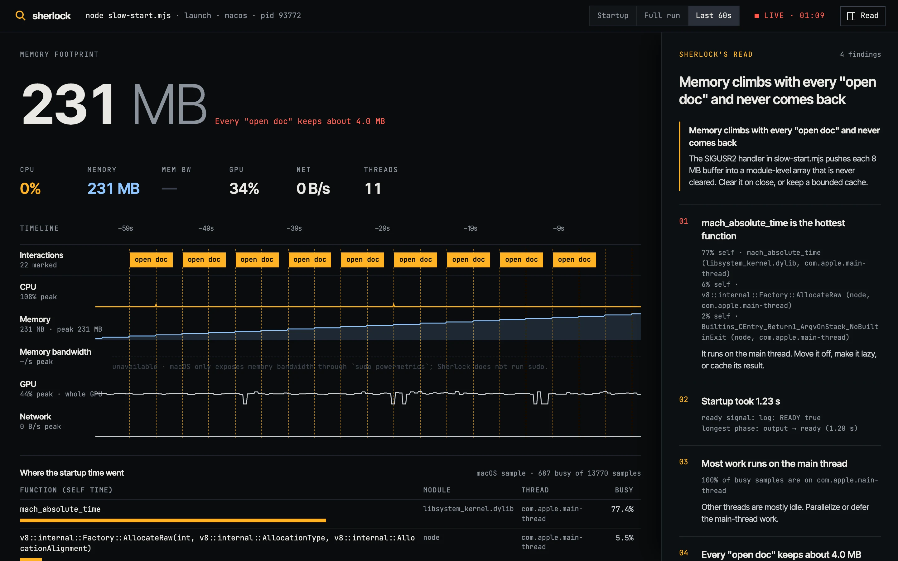
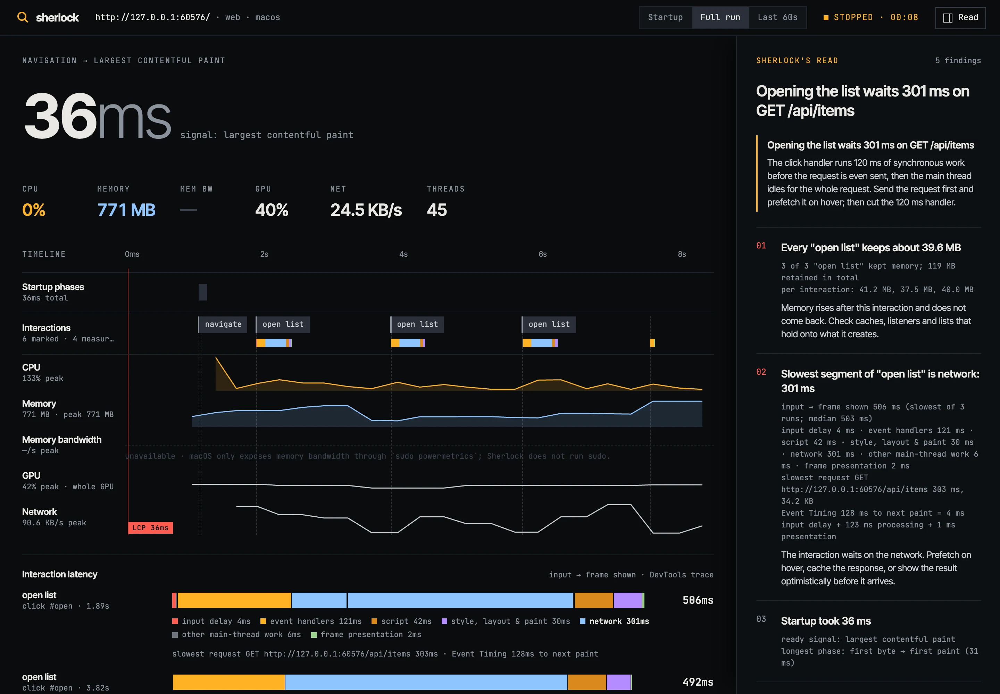

01Why it exists
Every time an app is slow to start or heavy to run, someone builds a one-off harness for that repo: launch it, poll some numbers, eyeball a chart, guess. The harness rarely carries over to the next project, because it was built around that project's stack.
Sherlock is the harness, made general. An agent reads the project, works out what it is and how to run it, and drives a small measuring engine that knows how to watch any process on your machine. The engine is exact and boring. The agent decides what to measure, reads the numbers, and finds the line of your code behind them.
02Install
As a Claude Code plugin
/plugin marketplace add hiftikha/sherlock
/plugin install sherlock@sherlockThen run /sherlock:profile in any project, with or without a goal: /sherlock:profile the dev server takes 8 seconds to come up.
With npx
npx sherlock-profilerThe wizard detects the project and offers four ways in: open Claude Code with Sherlock loaded, run the agent in your terminal with an API key, profile directly without an agent, or install the plugin for every project. npx github:hiftikha/sherlock runs the latest commit on main.
03A drill pass
The profile skill is the playbook Claude follows. A pass goes like this:
- Detect. Rust, Tauri, Electron, Next.js, Vite, iOS, Android, Rust→WASM, Go or Python, and how to launch it.
- Profile the real thing. A release build, with a ready signal: a log line, a port or a URL. Without one, Sherlock times until the CPU goes quiet and says so.
- Open the dashboard so you watch the timeline fill in.
- Read startup. The longest phase, whether startup was waiting or computing, the hot functions, network before ready, and peak memory. Then find those functions in your code.
- Drive interactions. Mark each one, perform it three times, and see what each repetition keeps.
- Write the read. Each finding goes into the dashboard's rail with its evidence, the file and line, the fix and the expected saving.
- Save the report as JSON and a standalone HTML page under
.sherlock/.
04What it measures
| macOS | Linux | Web | iOS Sim | Android | |
|---|---|---|---|---|---|
| Startup | spawn → output → ready → idle | same | TTFB, FCP, LCP, load, CLS | launch → quiet | to first frame |
| Where it went | stacks from the first instruction | — | long tasks, script, layout | stacks | — |
| CPU | process tree | process tree | browser tree | app | app |
| Memory | footprint | RSS | JS heap | footprint | RSS, PSS |
| Mem bandwidth | needs sudo; off | perf, estimate | — | — | — |
| GPU | whole GPU | — | — | — | — |
| Network | per process | namespace | request weight | — | namespace |
Anything a target can't measure shows as unavailable with the reason. Sherlock never draws a flat line where it has no data.
05The dashboard
One local page, served on 127.0.0.1, updating as the app runs. The startup phases, interaction markers and every resource share one time axis, so a slow phase, a CPU plateau and a memory climb line up underneath each other. Three views: Startup zooms to the launch, Full run shows everything, Last 60s follows the app live. The right rail holds Sherlock's read and collapses with ].
Startup view: phases, the ready line, and where the time went.

Last 60s: memory steps up after every "open doc".
06Interactions, latency and leaks
Mark an interaction just before it happens: from the dashboard (m), by typing a label in the terminal, or by the agent with sherlock_mark. Do the same interaction a few times with the same label. For each repetition Sherlock compares memory just before it with memory just before the next one, and if at least half of them keep memory, it reports how much each one keeps and the total.
Latency, end to end, on the web. sherlock_interact clicks a selector or a point, or presses a key, on a page in headless Chrome and records a DevTools trace around it. The time from the input to the frame that shows the result is split into measured segments: input delay (from Event Timing), event handlers, script after them, network (the main thread idle while a request the interaction sent is in flight), style, layout and paint, idle waiting, and frame presentation (to Display::FrameDisplayed). The dashboard draws it as a segmented bar on the Interactions lane, and the finding names the biggest piece: Slowest segment of "open list" is network: 301 ms. Give it a done_selector to end the interaction when its result appears.
Native. Every mark gets a CPU and memory summary: how long the process tree stayed busy after it, CPU average and peak, and memory before, at the peak and after. sherlock_mark with stacks_seconds samples call stacks during the interaction on macOS.

Each click traced from the input to the frame that shows the result. The network wait is the biggest piece.
Input → frame breakdowns are web only for now. Sherlock doesn't hook a native app's input events or frame presentation, so native interactions get busy time, memory and stacks instead, accurate to one 100–250 ms sample.
07The tools
The plugin's MCP server exposes fourteen tools. Claude calls them; you can also call them from any MCP client with node cli/sherlock.mjs mcp.
| Tool | What it does |
|---|---|
| sherlock_detect | What the project is and how to launch it. |
| sherlock_launch | Launch a command, time its startup phases, sample it live, capture startup stacks. |
| sherlock_attach | Attach to a running process by pid or name. |
| sherlock_web | Page startup in headless Chrome. |
| sherlock_ios | Cold launch in the booted iOS Simulator. |
| sherlock_android | Cold start on a device or emulator. |
| sherlock_interact | Click or type on a web page and break the interaction down from input to frame shown. |
| sherlock_mark | Put an interaction marker on the timeline; optionally sample call stacks around it. |
| sherlock_observe | Watch for a few seconds and return an updated digest. |
| sherlock_stacks | Sample call stacks right now, during a slow interaction. |
| sherlock_dashboard | Open the live dashboard. |
| sherlock_note | Write a finding into the dashboard's rail. |
| sherlock_stop | Stop, compute final findings, save JSON and HTML reports. |
| sherlock_sessions | List sessions. |
08The CLI
sherlock # the wizard
sherlock agent "why is the window slow to appear?"
sherlock launch --ready-log 'listening' -- ./target/release/server
sherlock launch --ready-port 3000 -- npm run dev
sherlock attach my-app
sherlock web http://localhost:3000/ --throttle 4
sherlock interact http://localhost:3000/ --click '#open' --label 'open list' --done '#list li'
sherlock ios com.example.app
sherlock android com.example.app
sherlock detect
sherlock report .sherlock/sherlock-1a2b3c4d.json
sherlock install # add the plugin to Claude CodeWhile a session is live, type a label and press enter to mark an interaction; press enter alone to stop and save. --json prints a digest, --exit stops after startup, --no-stacks skips the warm-up launch, --no-ui skips the dashboard.
09How it measures
Native. On macOS, ps gives cumulative CPU time for the process tree, so CPU is exact between samples rather than a decayed average; footprint gives physical footprint, which counts compressed memory that RSS misses; nettop gives per-process network; ioreg gives whole-GPU utilization. On Linux the same comes from /proc, and memory bandwidth from perf last-level cache misses when the kernel allows it.
Startup stacks. Attaching a sampler freezes a process for a few hundred milliseconds. So on macOS Sherlock runs a warm-up launch with sample -wait attached from the first instruction, keeps its stacks, then times a second, untouched launch. Rust and C++ symbols are demangled.
Web. Chrome is driven over the DevTools Protocol directly. Long tasks come from a timeline trace, the way Lighthouse counts them, because the browser doesn't buffer long-task entries for observers that register late. Interactions are dispatched with Input.dispatchMouseEvent and Input.dispatchKeyEvent inside a trace bracketed by user-timing marks, so the parser knows exactly which window to read.
Mobile. iOS apps run as processes on the Mac inside the Simulator, so Sherlock samples them like native apps. Android uses am start -W for time to first frame and reads /proc over adb.
10Limits
- Memory bandwidth on macOS isn't measured. It needs
sudo powermetrics, and Sherlock never runs sudo. - macOS GPU is the whole GPU, not your process.
- With stacks on, the timed launch is a warm start. Pass
--no-stacksfor a launch with nothing before it. - iOS Simulator timings run on your Mac's CPU. Compare builds with them; don't quote them as device numbers.
- Linux call stacks and Windows aren't supported yet.
11Questions
Does it send my code anywhere?
The engine runs locally and the dashboard binds to 127.0.0.1. Inside Claude Code, what Claude reads goes through your Claude Code session as usual. The terminal agent sends your goal, tool results and the files it reads to the Claude API with your key. The dashboard page loads fonts from Google Fonts and NumberFlow from jsDelivr.
Will it run my app without asking?
In Claude Code, each tool call goes through Claude Code's permission prompts. The terminal agent asks before every command and every launch unless you pass --yes.
Does it need dependencies?
No, for profiling. It uses Node's built-in modules and the tools your OS ships. The terminal agent loads @anthropic-ai/sdk.
Can I use the reports in CI?
sherlock launch --exit --json -- ./app prints the startup digest as JSON and saves a report, so you can fail a build when startup regresses.